Skip to content
Électroniques
Maison
Beauté
Santé
Cuisine
Outils
Sports
Jouets
Bébés
Mode
Extérieur
Animaux
Jeux Vidéos
Livres
Rechercher :
Électroniques
Maison
Beauté
Santé
Cuisine
Outils
Sports
Jouets
Bébés
Mode
Extérieur
Animaux
Jeux Vidéos
Livres
Rechercher :
Rechercher :
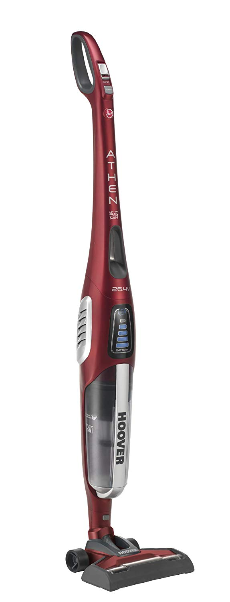
Hoover ATN264R – Test et avis
Acer X133PWH – Test et avis
Benq W1090 – Test et avis
Canon Pixma MX925 – Test et avis
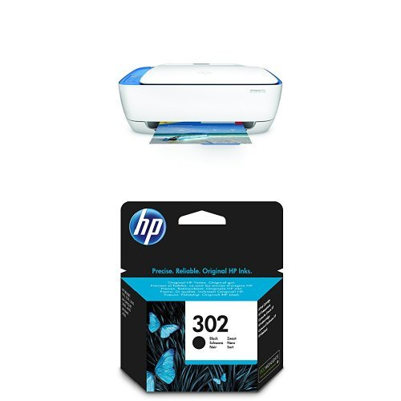
HP Deskjet 3637 – Test et avis
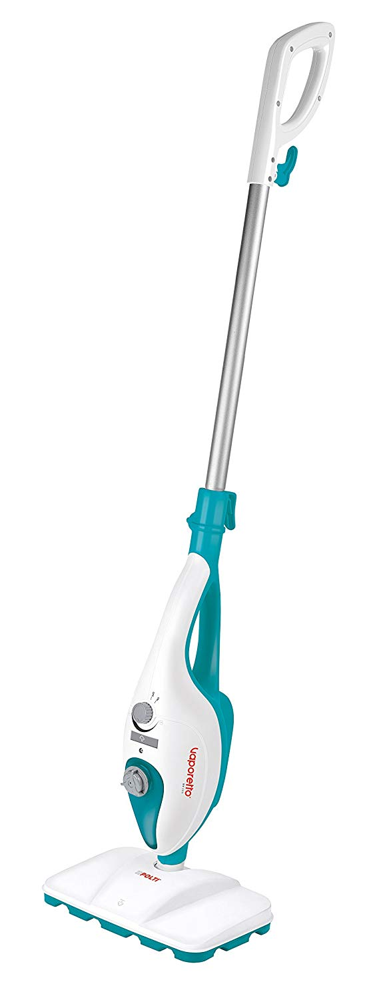
Vaporetto SV205 – Test et avis
Canon Selphy CP1200 – Test et avis
Sony XA1 – Test et avis
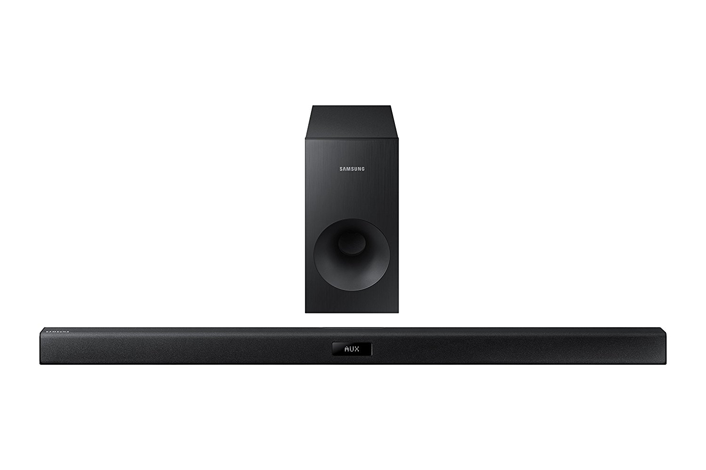
Samsung HWJ355 – Test et avis
Sony DSC-H300 – Test et avis
Brother 4234D – Test et avis
PFS 5000 E – Test et avis
Lumix TZ100 – Test et avis
Chuwi HI10 – Test et avis
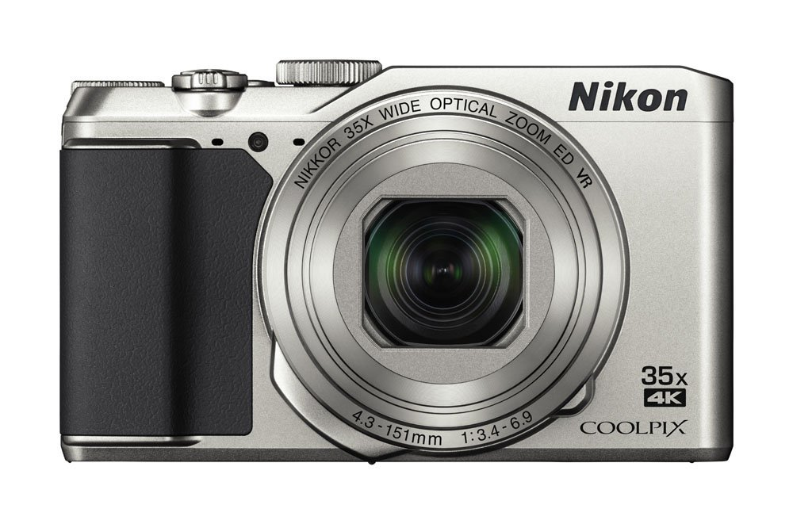
Nikon Coolpix A900 – Test et avis
Bosch GTS 10 XC – Test et avis
Acer Iconia Tab A3-A40 – Test et avis
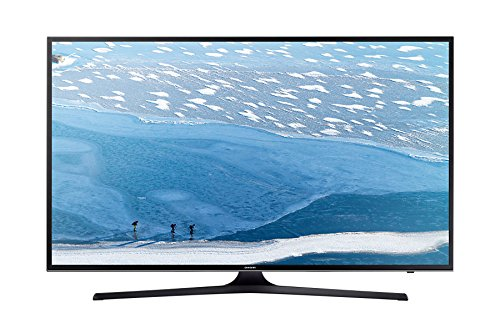
UE55KU6000 – Test et avis
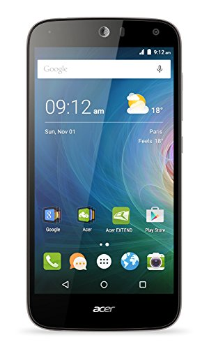
Acer Z630 – Test et avis
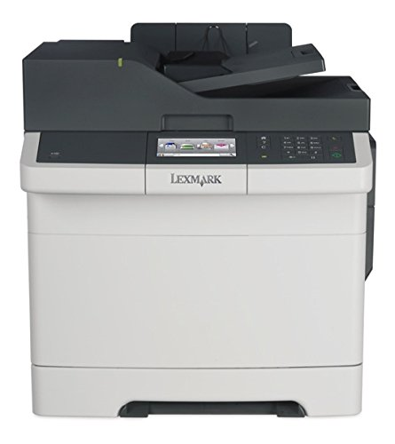
Lexmark CX410DE – Test et avis
Kenwood KMX50 – Test et avis
Delonghi Esam 4000 – Test et avis
Zoom H1 – Test et avis
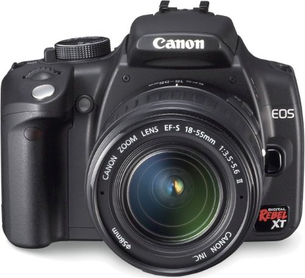
Canon EOS 350D – Test et avis
Elephone M2 – Test et avis
Lumix GF7 – Test et avis
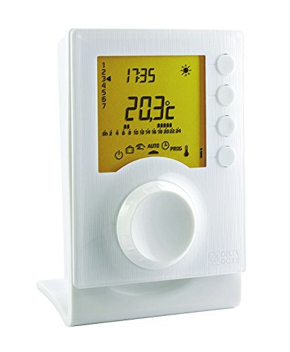
Tybox 137 – Test et avis
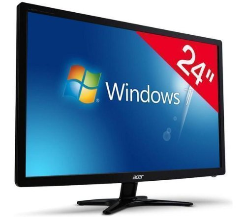
Acer G246HLBBID – Test et avis
Moulinex Masterchef 5000 – Test et avis
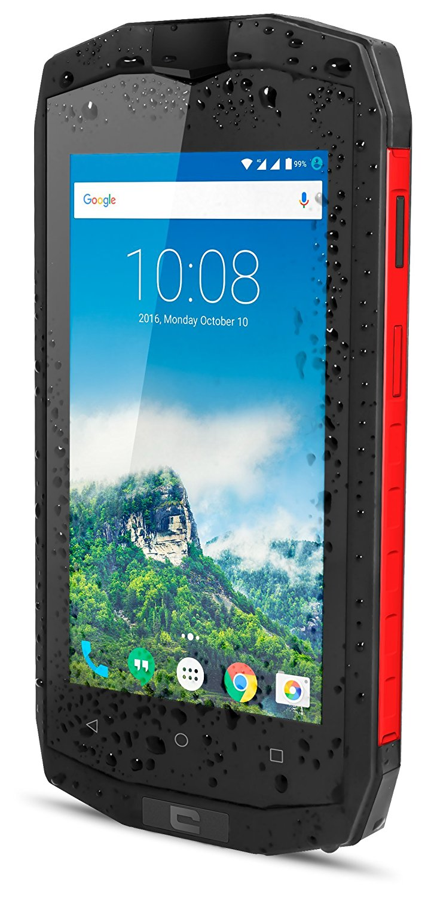
Crosscall M1 Core – Test et avis
Faac C720 – Test et avis
Olympus TG 4 – Test et avis
Pioneer DDJ SB2 – Test et avis
Sony MDR 1A – Test et avis
LG 65UF680V – Test et avis
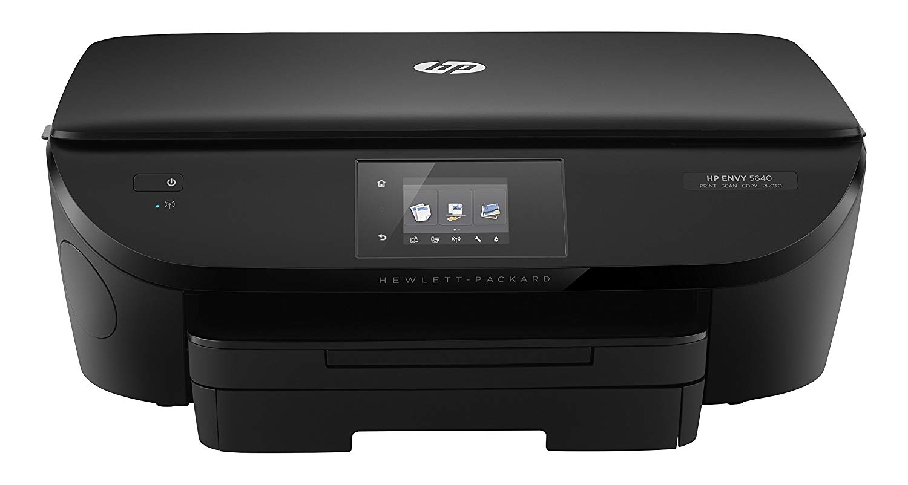
HP Envy 5640 – Test et avis
Kenwood KMC570 – Test et avis
eTrex Touch 35 – Test et avis
Metabo BS 18 – Test et avis
Asus Zenfone 3 Ultra – Test et avis
Samsung Galaxy Tab S2 – Test et avis
JBL Charge 3 – Test et avis
Garmin Forerunner 235 – Test et avis
Doogee S60 – Test et avis
Canon Powershot SX610 HS – Test et avis
Casque HJC IS 17 – Test et avis
Objectif 75-300 Canon – Test et avis
Krups YY8125FD – Test et avis
Huawei Mate 7 – Test et avis
Boss GT 100 – Test et avis
Logitech G933 – Test et avis
Garmin Forerunner 15 – Test et avis
Lumière Pulsée Philips – Test et avis
Rowenta RO8213EA – Test et avis
Karcher SE 4001 – Test et avis
Parrot Zik 3 – Test et avis
Pixma TS8050 – Test et avis
Pentax K1 – Test et avis
Moto G4 Play – Test et avis
Polar M430 – Test et avis
Bosch WTH85290FF – Test et avis
Delonghi Esam 5500 – Test et avis
Dell Latitude E4310 – Test et avis
Storio 3 Baby – Test et avis
HP Envy 5644 – Test et avis
Scooba 450 – Test et avis
HTC One M7 – Test et avis
Galaxy J7 2016 – Test et avis
Canon MX475 – Test et avis
HTC Desire Eye – Test et avis
Samsung Galaxy A6 – Test et avis
Tomtom Start 52 – Test et avis
Rasoir Philips 9000 – Test et avis
LG Spirit 4g – Test et avis
LG X – Test et avis
Eagletone UM30 – Test et avis
Optoma HD141X – Test et avis
Huawei p8 lite 2017 – Test et avis
Compex SP 4.0 – Test et avis
Zodiac MX6 – Test et avis
JBL Flip 2 – Test et avis
Brandt BXP5560X – Test et avis
HP Officejet Pro 6830 – Test et avis
Singer 1507 – Test et avis
Tascam DR-05 – Test et avis
Nokia 8 – Test et avis
Huawei Ascend Mate 7 – Test et avis
Slendertone ABS7 – Test et avis
Tablette Lenovo Tab 3 710F – Test et avis
Sony DSC-HX400V – Test et avis
Sony Xperia E4G – Test et avis
Training Mask 2.0 – Test et avis
Samsung UE24H4003 – Test et avis
Dewalt DW745 – Test et avis
Asus Z170 Pro Gaming – Test et avis
Lave Vitre Karcher WV2 – Test et avis
Forerunner 735XT – Test et avis
Nikon D5300 – Test et avis
Logitech Z623 – Test et avis
Plus de top 10s
Retour